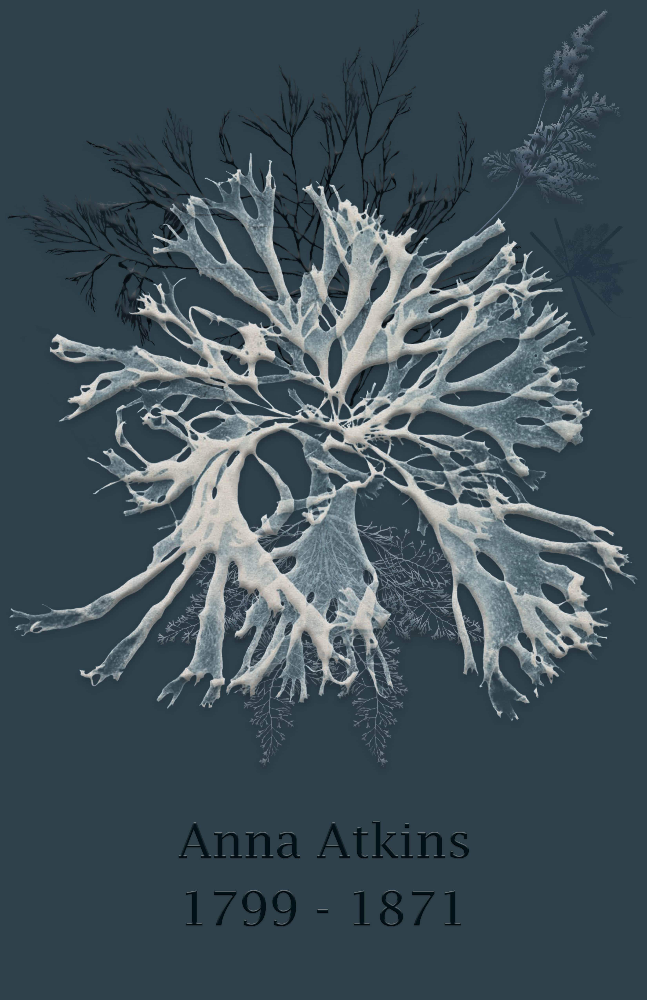
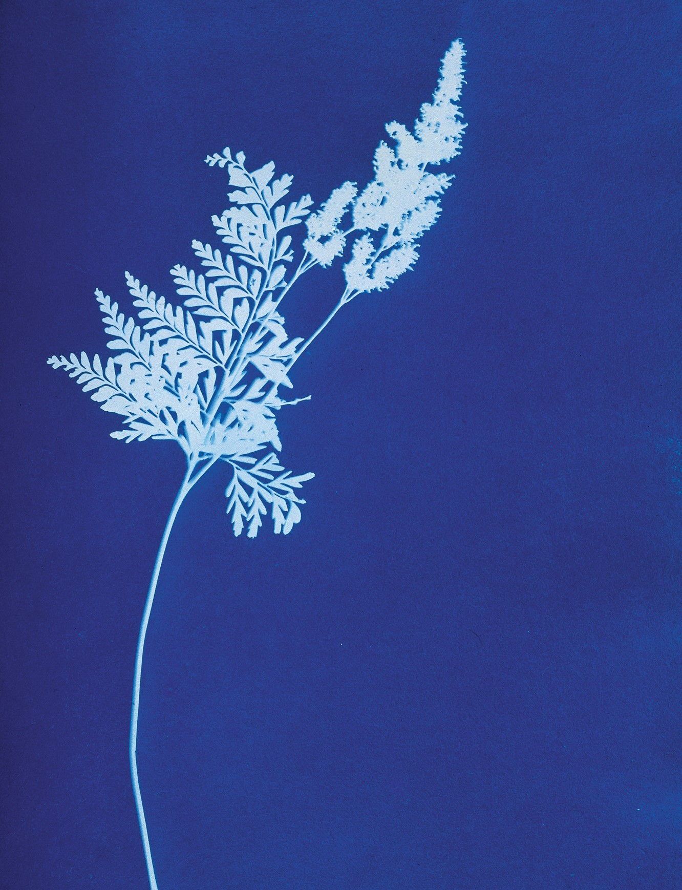
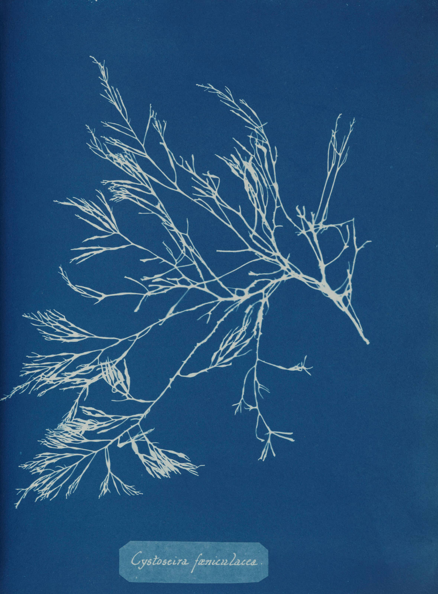
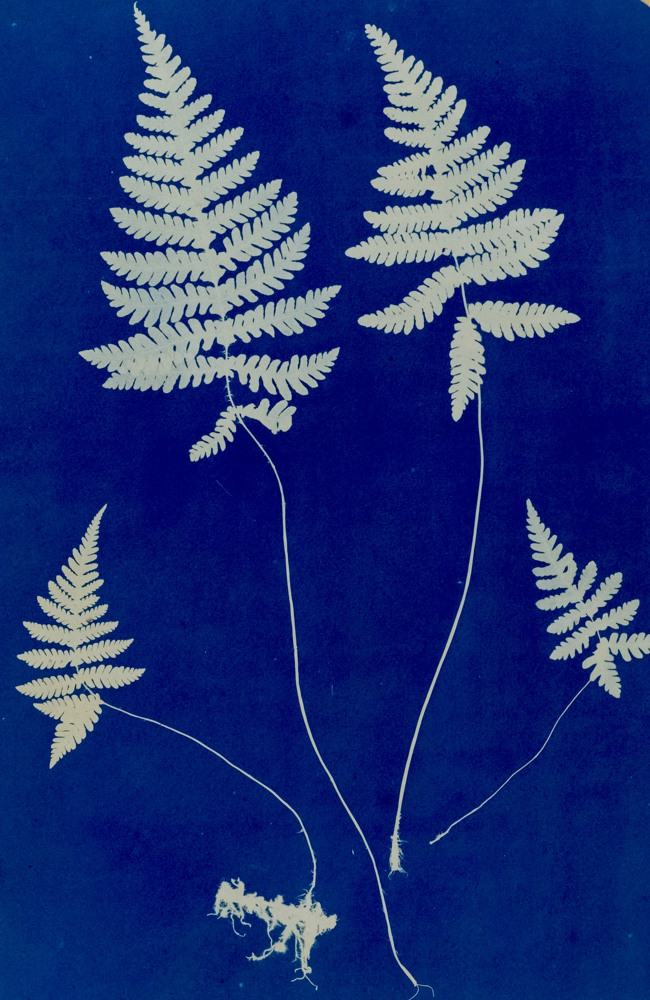
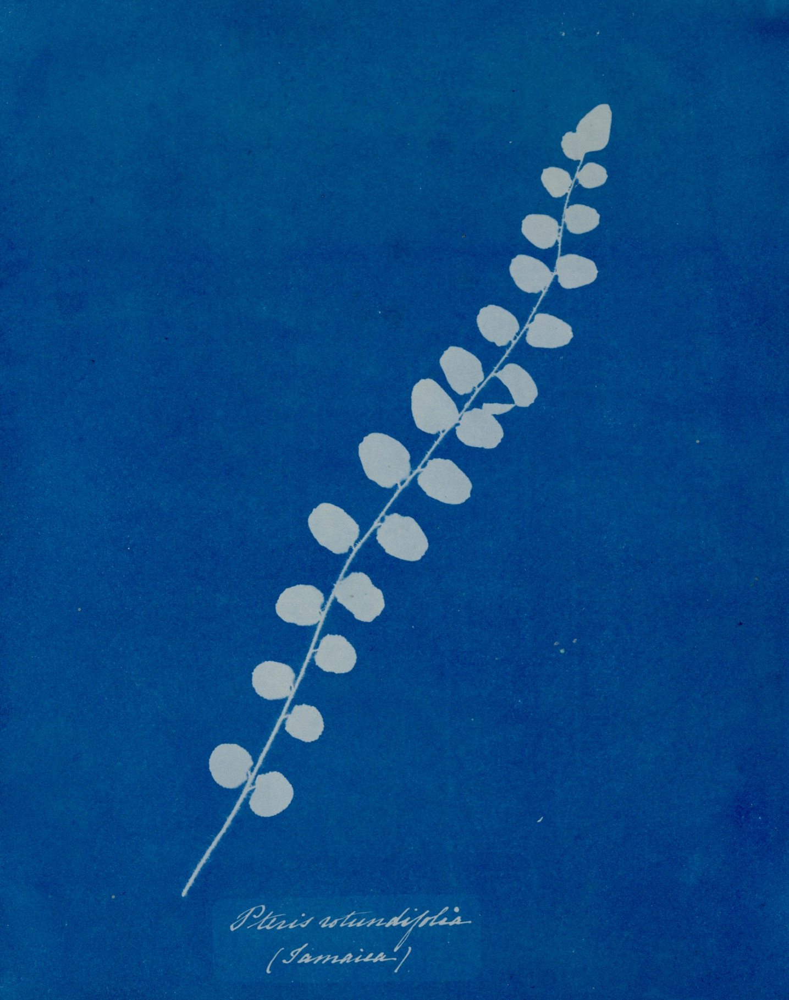
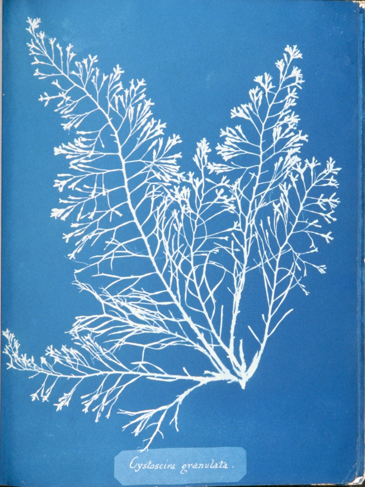

Anna Atkins' Legacy
A tribute poster honoring Anna Atkins — pioneering botanist, photographer, and the first person to publish a book illustrated with photographic images. Designed in Photoshop in the style of her iconic cyanotype process.

About Anna Atkins
Anna Atkins (1799–1871) was an English botanist and photographer — and a true pioneer. She is widely recognized as the first person to publish a book illustrated with photographic images: "Photographs of British Algae: Cyanotype Impressions" (1843).
Raised by her scientist father John George Children after her mother died in infancy, Atkins grew up immersed in the natural sciences. She became a member of the London Botanical Society in 1839, and four years later produced her landmark publication — predating many of photography's celebrated firsts.
She passed away on June 9, 1871, but her legacy endures in both the history of photography and the history of scientific illustration.
The Cyanotype Process
The cyanotype is a photographic printing technique developed in 1842 by Sir John Herschel. It produces prints in a distinctive rich Prussian blue by exposing iron-sensitized paper or fabric to UV light under a flat object — a plant, a drawing, or a negative.
The result is a high-contrast image: white silhouettes of the subject against a deep cyan background, where the white areas are where light was blocked and the blue areas are where it was exposed. Atkins used this process to document botanical specimens with a precision and beauty no hand-drawn illustration could match.
The same process became the basis for architectural blueprints, used industrially well into the 20th century.
The Concept
"When I first saw her work, I was attracted by the cyan color negative space with the dominant shapes of the plants. It's just like a silhouette but the colors were more towards the cyan side."
The poster is a direct homage to that visual language. Rather than illustrating about Anna Atkins, the design replicates her method — placing a botanical specimen at center stage against a cool steel-blue field, stripping everything back to the essential duotone tension she pioneered.
Design Decisions
- Background
- A muted steel blue — slightly softer than the deep Prussian navy of actual cyanotypes — gives the poster a contemporary feel while keeping clear visual reference to the process.
- Subject
- A branching coral/algae specimen placed centrally references Atkins' most celebrated series, British Algae, while a ghosted dark plant behind it adds depth and mystery.
- Color & Contrast
- Near-monochromatic: only two tones — the cool blue field and the luminous white form. No added colors, no gradients. Unity through restraint, exactly as Atkins' process demanded.
- Composition
- The specimen fills the frame from center-right with organic asymmetry — echoing how Atkins composed her plates, where the plant's natural form dictated the layout, not a grid.
Anna Atkins' Original Cyanotypes
These works from Atkins' archives served as the visual references for this project — studying her compositions, her tonal range, and the way she let specimen form speak without decoration.




